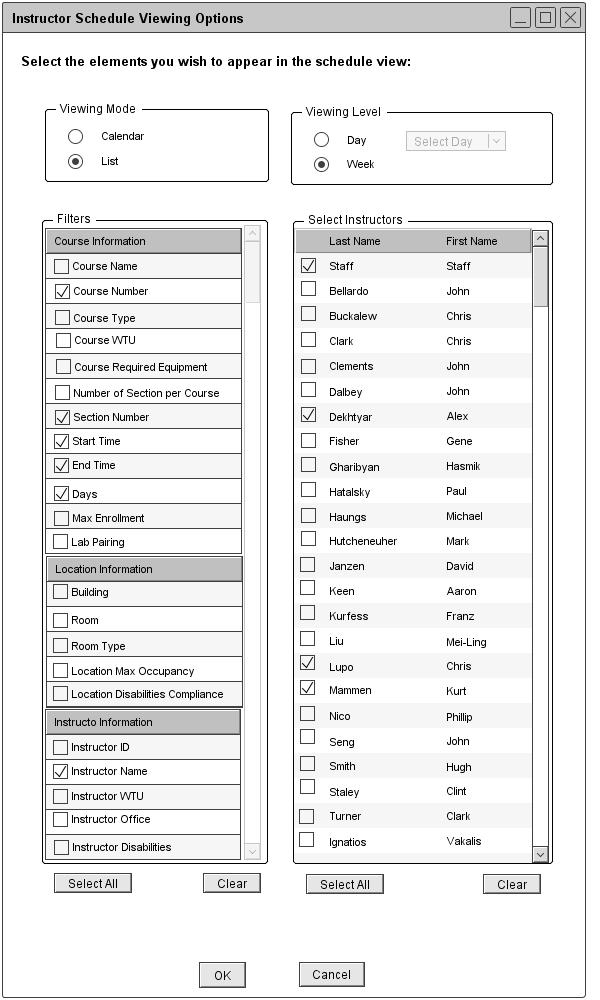
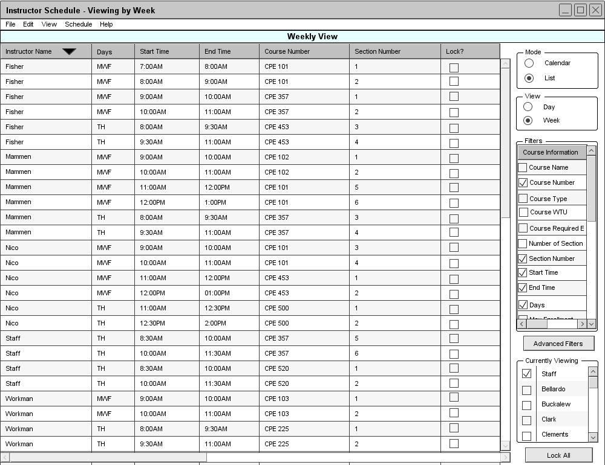

Figure 83 is a filled in version of figure 69.

Figure 83: Viewing an instructor schedule in the list mode
From the user's selections in figure 83, the Schedule Tool displays a weekly instructor schedule view in the list mode as shown in figure 84.

Figure 84: List Mode of Weekly Instructor Schedule
The Course Number, Section Number, Start Time, End Time, Days, and Instructor Name filter options are automatically selected and displayed on the schedule. When viewing a weekly instructor schedule in the list mode, the data is sorted by instructor's name, days, and then start time by default. Under the instructor schedule view, the popup displays the course number, section number, and name of the instructors. The weekly instructor schedule view is very similar to the weekly course schedule view.